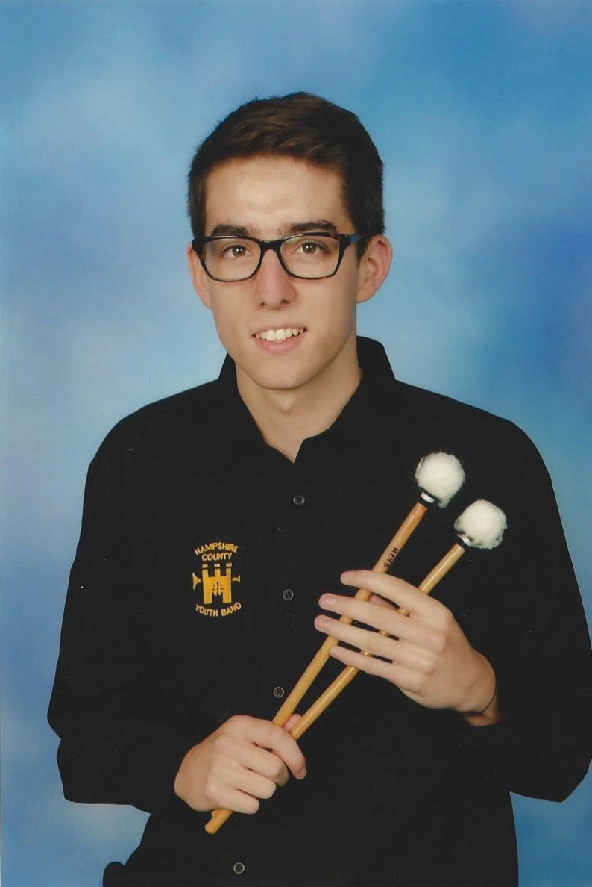

Josh Neale is a kit player and percussionist studying at the London College of Music, specialising in jazz. His origins are in brass bands which he has been part of from the age of 10, ranging from Area level (Hamble Area Youth Band), to County level (Hampshire County Brass Band), both of which have toured Europe multiple times.
This strong foundation allowed him to swiftly progress into the Big Band environment, in particular Romsey Area Youth Jazz Orchestra, who performed in Cork during it's 'Red Hot International Jazz Festival' in 2012. Now having performed with groups such as The Coldstream Guard, he wishes to continue his percussion playing but is also aiming to be more involved in smaller jazz ensembles, implementing the drums in new ways.